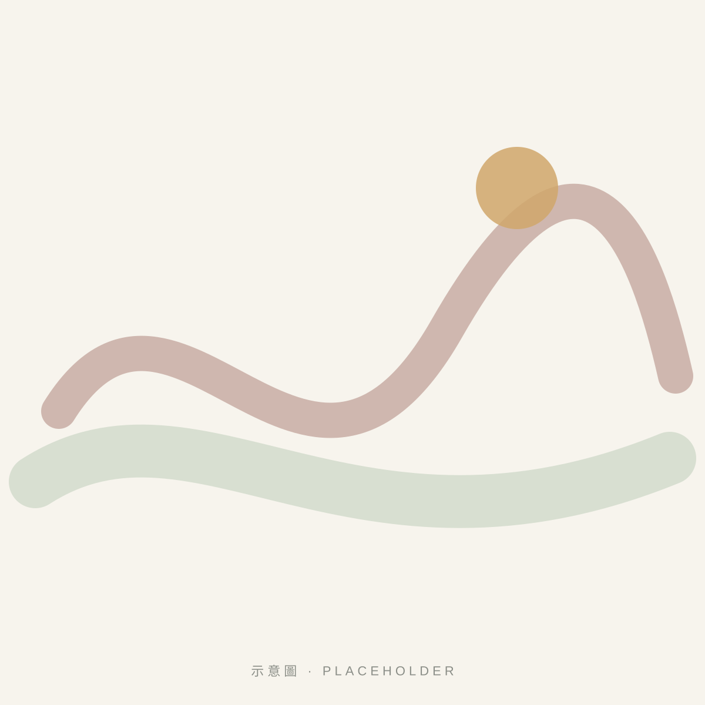

Our Approach
藝術對話
Art as a Conversation with Yourself
藝術對話不是學畫畫，而是透過色彩與創作，練習聆聽自己。重點在參與、覺察與表達，而非作品的技巧。
01
什麼是藝術對話？
藝術對話，是把藝術當作一種與自己交談的方式。當我們看一幅畫、選一個顏色、畫下一條線，內在的感受會以不同於語言的形式浮現。
協會的活動提供一個安靜、不被評價的空間，讓參與者在創作與欣賞中，留意自己的感覺，並在願意時與他人分享。

02
為什麼使用色彩？
色彩是最容易進入的表達工具。不需要構圖能力，也不需要說明理由，選擇本身就是一種回應。
同一個顏色，對不同的人有不同的意義。在活動中，我們邀請參與者描述自己的選擇，而不是套用「某個顏色代表某種情緒」的固定解讀。
03
藝術創作與內在感受
創作的過程會帶出平常不易察覺的感受：專注、猶豫、放鬆，或是一段回憶。我們把這些經驗視為認識自己的線索，而非需要被解決的問題。
作品完成與否、好看與否，都不是衡量的標準。過程中的停頓與發現，才是藝術對話的核心。
04
不需要繪畫基礎
不論年齡、背景或是否學過美術，都可以參加。活動不教授技法，也不比較作品。
對沒有創作經驗的人來說，這反而是一個輕鬆的起點：沒有標準答案，只有屬於自己的表達。
05
工作坊體驗方式
以下為一般流程示意，實際內容依各場活動與場域規劃。
-
1
安頓 Arrive
以簡短的引導，讓身體與注意力回到當下。
-
2
觀看 See
欣賞作品或觀察色彩，留意心中浮現的感覺。
-
3
創作 Make
用顏色、線條與形狀自由表達，沒有對錯。
-
4
分享 Share
願意的話，與夥伴說說創作中的發現；也可以選擇只聆聽。
06
重要說明：藝術對話活動與藝術治療的區別
本會的藝術對話活動
- 屬於藝術體驗、欣賞與陪伴活動
- 著重參與、覺察與自我表達
- 不進行診斷、評估或治療
藝術治療
- 由具備正式專業資格的藝術治療師執行
- 有明確的治療目標與專業評估
- 屬於心理健康專業服務
本會活動不宣稱治癒疾病或改善臨床症狀，亦不能取代醫療或心理治療。若您正面臨身心困擾，請尋求醫師、臨床心理師或諮商心理師等專業協助。
07 — FAQ
常見問題
參加活動需要繪畫基礎嗎？
不需要。活動重視的是表達與覺察，而不是技巧。沒有拿過畫筆的人，也可以從選一個顏色開始。
這是藝術治療嗎？
不是。協會的藝術對話活動屬於藝術體驗與陪伴，不是由具備專業資格的藝術治療師進行的「藝術治療」，也不提供診斷或治療。若您有身心健康上的需要，請尋求醫療或心理專業人員協助。
作品會被評分或解讀嗎？
不會。我們不替作品打分數，也不對參與者的作品做心理分析。作品的意義由創作者自己決定，分享與否也由本人選擇。
一場工作坊需要多久？要準備什麼？
時間與材料依每場活動規劃而定，報名資訊中會另行說明。協會正在整理標準化的工作坊資訊，確認後將公布於此。
機構或學校可以邀請協會辦理活動嗎？
可以。請透過「合作聯絡」頁說明場域、對象與期望，協會將與您討論適合的形式。
活動照片會被公開嗎？
公開任何照片前，都會先取得參與者（或其法定代理人）同意。涉及服務對象的場域，我們會避免拍攝可辨識的臉部。